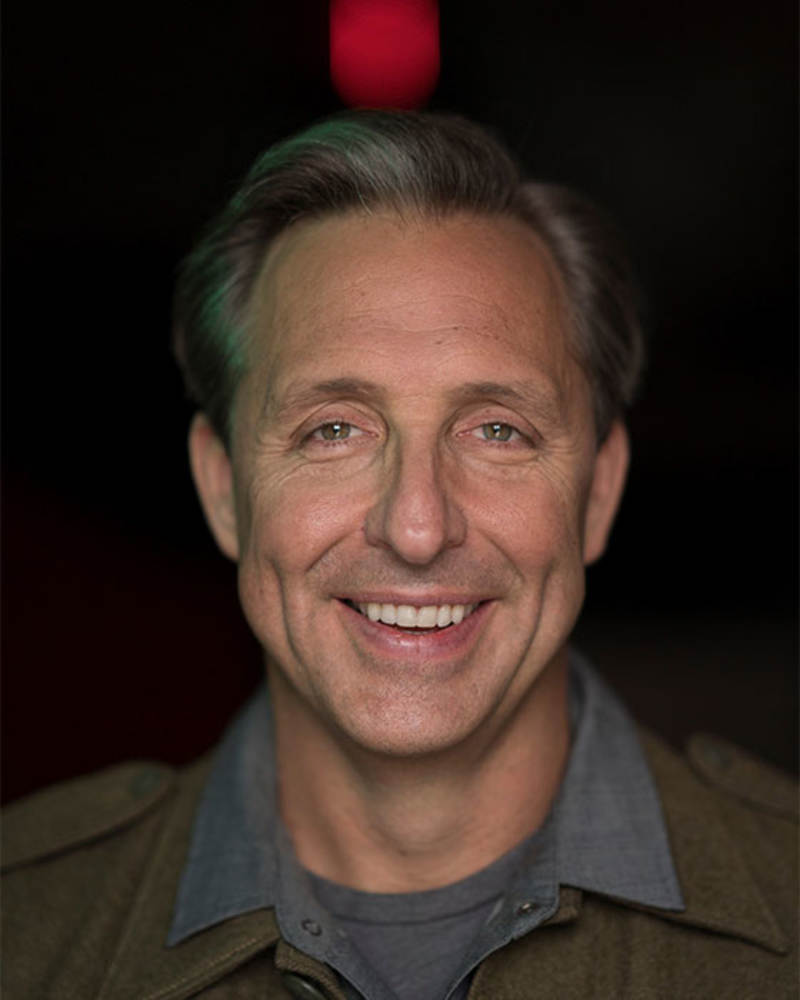

Fasting Experts
Looking to learn more about fasting from some of the leading experts in the field of fasting? Check them out below!

Dr. Jason Fung
Dr. Jason Fung is a Canadian nephrologist and is also a world-leading expert on fasting. He focuses on fasting and low-carb diets to treat people with type 2 diabetes.

Dr. Mindy Pelz
Dr. Mindy Pelz is a well renowned holisitic health expert and is known as one of the women leading the charge in educating women about their bodies. She is the founder of the Family Life Wellness clinic.

Dr. Mark Hyman
Dr. Mark Hyman is a physician who focuses on challenging people to reimagine our biology, health, and aging. He is the founder of The UltraWellness Center.

Peter Attia
Peter is a Canadian-American physician. He has a podcast called "The Peter Attia Drive Podcast", and is well known for his work in longevity medicine.
Dave Asprey
Known as "The Father of Biohacking", Dave Asprey is the founder of Bulletproof Nutrition. He is an advocate of the Bulletproof diet, a low-carb high-fat diet.